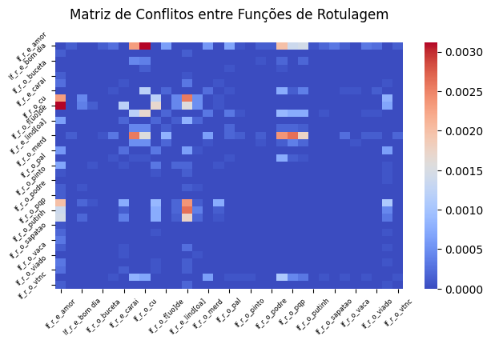
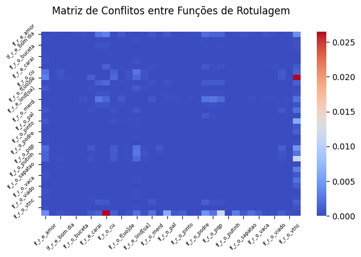
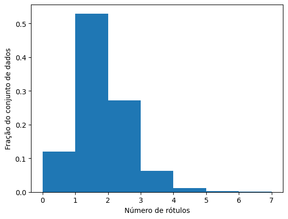

ToLD-Br é o maior conjunto de dados para tweets tóxicos em português brasileiro, desenvolvido a partir de 42 anotadores selecionados a partir de um grupo de 129 voluntários. Os anotadores foram selecionados visando criar um grupo plural em termos de demografia (etnia, orientação sexual, idade, gênero). Cada tweet foi rotulado por três anotadores em 6 categorias possíveis: LGBTQ+fobia, Xenofobia, Obsceno, Insulto, Misoginia e Racismo.
Dado os rótulos, foi possível definir um dataset com texto do tweet (string) seguido por uma classe binária “tóxica” com valores 0 ou 1. O valor de 0 representa um texto não tóxico, e 1 representa um comportamento tóxico.
# Funções para limpeza de dadosimport unicodedatadef accented_characters(text): normalized_text = unicodedata.normalize('NFKD', text) ascii_text = normalized_text.encode('ASCII', 'ignore')return ascii_text.decode()import redef numbers_and_punctuation(text): text = re.sub(r'[^a-zA-Z ]', ' ', text)return textdef excessive_spaces(text): text = re.sub(r'\s+', ' ', text)return textdef n_words(text, n): text =' '.join([word for word in text.split() iflen(word) > n])return textdef all_clear(text, ac =0, np =0, es =0, nw =0, n =1):if ac ==1: text = accented_characters(text)if np ==1: text = numbers_and_punctuation(text)if es ==1: text = excessive_spaces(text)if nw ==1: text = n_words(text, n)return text
É sempre bom ter uma noção das palavras que mais aparecem nas frases dos usuários, para assim receber possíveis direcionamentos na criação das funções de rotulagem.
from sklearn.feature_extraction.text import TfidfVectorizerfrom nltk.corpus import stopwordsimport numpy as npstopwords_nltk = stopwords.words('portuguese')# Carregar as stopwords em portuguêsvectorizer = TfidfVectorizer(stop_words=stopwords_nltk, max_features=2000, ngram_range=(1, 2), min_df=5, max_df=0.8, lowercase=True)# Criar um vetor TF-IDFvectorizer.fit(df.text) # Ajuste apenas com os dados de treinamento.# Transformar os textos em vetoresX_train = vectorizer.transform(df.text)y_train = df.toxicdef get_top_ngrams(X_train: np.ndarray, vectorizer: TfidfVectorizer, top_n: int=30) -> np.ndarray:""" Obter os n-grams mais frequentes dos dados textuais vetorizados. Args: X_treino (np.ndarray): Os dados textuais vetorizados. vectorizer (TfidfVectorizer): O vetor utilizado para transformar os dados textuais. top_n (int, optional): O número de top n-grams a retornar. Padrão é 30. Returns: np.ndarray: Um array dos n-grams mais frequentes. """# Somar todas as colunas para obter a frequência total de cada n-gram total_ngram_frequencies = np.sum(X_train, axis=0)# Ordenar os n-grams pela sua frequência total sorted_ngrams_indices = np.argsort(total_ngram_frequencies)[::-1]# Obter os índices dos top n n-grams mais frequentes top_ngrams_indices = sorted_ngrams_indices[:top_n]# Obter os nomes dos n-grams correspondentes aos top n índices ngram_names = np.array(vectorizer.get_feature_names_out())return ngram_names[top_ngrams_indices]# Usar a função para obter os top 30 n-grams dos dados de treinamentotop_ngrams = get_top_ngrams(X_train, vectorizer, top_n=30)print('Palavras mais citadas:\n')for words in top_ngrams:for i, word inenumerate(words):print(word, end=', ')if i %5==0and i !=0:print()if i ==10:break
Palavras mais citadas:
gt gt, honesto, proximidade, voces nao, salles, ano passado,
aqui nao, primeira impressao, voce vai, correr, pequena,
from wordcloud import WordCloudimport matplotlib.pyplot as plt# Flatten the list of lists into a single list of wordsall_words = [word for words in top_ngrams for word in words]# Join all words into a single stringtext =' '.join(all_words)# Generate the word cloudwordcloud = WordCloud(width=800, height=400, background_color='white').generate(text)# Display the word cloud using matplotlibplt.figure(figsize=(10, 5))plt.imshow(wordcloud, interpolation='bilinear')plt.axis('off')plt.show()
Separando DataFrame entre Treino, Teste e Desenvolvimento
import mathfrom sklearn.model_selection import train_test_split# Criando backup do DataFrame original:df_label = df.copy()z =1.96# Valor Z para nível de confiança de 95%p =0.5# Proporção esperada de avaliações positivas. Assumimos 50%, que é o pior cenário.e =0.05# Margem de erro# Calculando tamanho da amostra e arredondandotamanho_amostra = math.ceil((z**2* p * (1-p)) / e**2)print(f"\nTamanho da amostra: {tamanho_amostra}.\n")# Embaralhando ordem do DataFramedf_label = df_label.sample(frac=1.0, random_state=1)# Criando novo DataFrame para treino com primeira metade do DataFrame embaralhadodf_train = df_label[tamanho_amostra *2:]# Criando DataFrame para treino final com primeira metade do DataFrame embaralhadodf_train_final = df_label[tamanho_amostra *2:]# Excluindo rótulos do DataFrame de Treinodf_train = df_train.drop('toxic', axis=1)# Criando novo DataFrame para teste com segunda metade do DataFrame embaralhadodf_develop_test = df_label[:tamanho_amostra *2]# Dividindo aleatoriamente DataFrames entre teste e desenvolvimentodf_test, df_develop = train_test_split(df_develop_test, test_size=0.5, random_state=1, stratify=df_develop_test.toxic)print(f"Tamanho do conjunto de dados original: {len(df_label)}.")print(f"Tamanho do conjunto de treinamento: {len(df_train)}.")print(f"Tamanho do conjunto de teste: {len(df_test)}.")print(f"Tamanho do conjunto de desenvolvimento: {len(df_develop)}.")
Tamanho da amostra: 385.
Tamanho do conjunto de dados original: 16800.
Tamanho do conjunto de treinamento: 16030.
Tamanho do conjunto de teste: 385.
Tamanho do conjunto de desenvolvimento: 385.
Labeling Functions (Funções de Rotulagem | LF) para Palavras
As funções de rotulagem de palavras para o presente dataset, servirão para definir com base nas palavras da frase do usuário, se seu comentário foi tóxico ou não.
( 1 ) Tóxico: Quando alguma palavra ofensiva e/ou tóxica está presente na frase.
( 0 ) Não tóxico: Quando alguma palavra de elogio e/ou gentil está presente na frase.
( -1 ) Abstenção: Quando as palavras tóxicas ou não tóxicas não estiverem presentes na frase.
Nota-se que a esmagadora maioria das das palavras definidas nas LF’s não estão presentes no gráfico da nuvem de palavras. Porém é importante ter em mente que a escolha das palavras que irão compor elas não está unicamente associada a quantidade de vezes que elas aparecem nos textos, pois também é relevante escolher palavras com alto grau de certeza de que caso elas componham a frase, será obtido um rótulo correto.
Analisando Influência das Funções de Rotulagem
j: Índice da função de rotulagem
Polarity: Se a LF se refere a tóxidade e/ou não tóxidade.
Coverage: Proporção de vezes que uma função de rotulagem forneceu rotulos para instâncias (amostras de dados).
Overlaps: Proporção de vezes que uma função de rotulagem forneceu rótulos para instâncias que foram rotuladas por pelo menos outra função de rotulagem de mesma polaridade.
Conflicts: Proporção de vezes que uma função de rotulagem atribuiu rótulos de polaridade diferente dos rótulos atribuídos por outras funções de rotulagem para as mesmas instâncias.
from snorkel.labeling import LFAnalysis# Aplica as funções de rotulagem (lfs) no conjunto de dados de treinamento (df_label_train_tain)# L_train é uma matriz onde cada linha representa um exemplo e cada coluna representa a saída de uma função de rotulagemL_train = applier.apply(df=df_train)print(f'\nTotal Coverge: {LFAnalysis(L=L_train, lfs=lfs).label_coverage()}.')# Cria uma instância de LFAnalysis para analisar o desempenho das funções de rotulagemLFAnalysis(L=L_train, lfs=lfs).lf_summary()
A tabela mostra que as LF’s conseguiram cobrir aproximadamente 54% de todo o dataset, com algumas palavras que estiveram presentes na nuvem de palavras (porra e cu) ganhando destaque por seu alto Coverage, e baixo Conflict.
Analisando o Acerto das Funções de Rotulagem
# Aplica as funções de rotulagem (lfs) no conjunto de dados de desenvolvimento (df_label_train_develop)# L_dev é uma matriz onde cada linha representa um exemplo e cada coluna representa a saída de uma função de rotulagemL_dev = applier.apply(df=df_develop)# Cria uma instância de LFAnalysis para analisar o desempenho das funções de rotulagem, com acertos e errosLFAnalysis(L=L_dev, lfs=lfs).lf_summary(Y=df_develop.toxic.values)
Como pode ser visto na tabela, todas as funções de rotulagem obtiveram um grau de acertabilidade, ao comparar com os rótulos originais, igual ou maior que 50% (com a esmagadora maioria sendo maior).
Analisando Conflito entre Funções de Rotulagem
def compute_conflict_matrices(L_train, lfs):# Função para criar e processar a matriz de conflitos normalizadadef process_conflict_matrix(L, lfs, normalize=False, column_name='conflict'): lf_analysis = LFAnalysis(L=L, lfs=lfs) conflict_matrix = lf_analysis.lf_conflicts(normalize_by_overlaps=normalize) conflict_matrix = pd.DataFrame([conflict_matrix], columns=[lf.name for lf in lfs]).T conflict_matrix.columns = [column_name] conflict_matrix = conflict_matrix.sort_values(by=column_name, ascending=False)return conflict_matrix# Calcular a matriz de conflitos normalizada normalized_conflict_matrix = process_conflict_matrix(L_train, lfs, normalize=True, column_name='normalized_conflict')# Calcular a matriz de conflitos não normalizada conflict_matrix = process_conflict_matrix(L_train, lfs, normalize=False, column_name='conflict')# Concatenar as duas matrizes de conflitos final_cm = pd.concat([conflict_matrix, normalized_conflict_matrix], axis=1)return final_cm# Calcular a matriz de conflitos finalcompute_conflict_matrices(L_train, lfs)
conflict
normalized_conflict
lf_r_e_lind[oa]
0.010917
0.866337
lf_r_e_amor
0.010792
0.882653
lf_r_o_cu
0.009108
0.215339
lf_r_o_porra
0.007611
0.299754
lf_r_o_caralho
0.007548
0.294404
lf_r_o_pqp
0.005864
0.365759
lf_r_e_feliz
0.005053
0.861702
lf_r_o_put
0.004991
0.173536
lf_r_e_vsf
0.003119
0.793651
lf_r_e_carai
0.002870
0.851852
lf_r_o_merd
0.002371
0.121019
lf_r_o_f[uo]de
0.002059
0.217105
lf_r_e_maravilhos[oa]
0.001560
0.806452
lf_r_o_pal
0.001372
0.186441
lf_r_e_incrivel
0.001310
0.724138
lf_r_e_bom dia
0.001061
0.809524
lf_r_e_mulherao
0.000873
0.933333
lf_r_o_bunda
0.000686
0.200000
lf_r_o_vagabund
0.000561
0.160714
lf_r_o_viado
0.000499
0.296296
lf_r_o_tnc
0.000499
0.088889
lf_r_o_vtnc
0.000374
0.081081
lf_r_o_piranha
0.000374
0.272727
lf_r_o_ridicul
0.000312
0.034965
lf_r_o_sapatao
0.000312
0.357143
lf_r_o_pica
0.000312
0.277778
lf_r_o_boiola
0.000250
0.666667
lf_r_e_boa tarde
0.000250
0.571429
lf_r_o_buceta
0.000187
0.115385
lf_r_o_podre
0.000125
0.222222
lf_r_o_vaca
0.000125
0.250000
lf_r_o_putinh
0.000062
0.020000
lf_r_o_pinto
0.000062
0.142857
import seaborn as snsimport matplotlib.pyplot as pltdef conflict_matrix(lfs, L):""" Esta função calcula a matriz de conflitos para um conjunto de funções de rotulagem e um conjunto de dados rotulados. Args: - lfs: Uma lista de funções de rotulagem. - L: Um array numpy de forma (num_examples, num_lfs) contendo os rótulos atribuídos por cada função de rotulagem a cada exemplo. Retorna: - Um DataFrame do pandas contendo a matriz de conflitos. """# Inicializa uma matriz de zeros com forma (num_lfs, num_lfs) conflict_matrix = np.zeros((len(lfs), len(lfs)))# Calcula o conflito entre cada par de funções de rotulagemfor i inrange(len(lfs)):for j inrange(len(lfs)):# Calcula o conflito entre as funções de rotulagem i e j conflict_matrix[i, j] = ((L[:, i] != L[:, j]) & (L[:, i] !=-1) & (L[:, j] !=-1)).mean()# Converte a matriz de conflitos para um DataFrame do pandas com os nomes das funções de rotulagem como rótulos das linhas e colunas conflict_matrix = pd.DataFrame(conflict_matrix, columns=[lf.name for lf in lfs], index=[lf.name for lf in lfs])return conflict_matrixdef matrix_graph(lfs, L_train):# Plotar a matriz de conflitos usando seaborn plt.figure(figsize=(7, 4)) sns.heatmap(conflict_matrix(lfs, L_train), annot=False, cmap="coolwarm", cbar=True, annot_kws={"fontsize": 6}) plt.title("Matriz de Conflitos entre Funções de Rotulagem\n") plt.xticks(rotation=45, fontsize=6) plt.yticks(rotation=45, fontsize=6) plt.show()matrix_graph(lfs, L_train)

O gráfico da matriz de conflito demonstra que de forma geral é bem baixo o índice de conflitos, com apenas alguns pontos apresentando uma maior diferença do padrão.
Labeling Functions para Palavras com uso de Transformer
O uso de um transformer como LF, será a aplicação de um modelo pré-treinado (a partir de um dataset com características semelhantes) para a rotulação das instâncias. O autor do transformer utilizado no presente carderno o define como um classificador de sequência de modelo multilíngue Distil-Bert treinado com base no conjunto de dados JIGSAW Toxic Comment Classification Challenge.
O autor do transformer explica que o modelo foi treinado em um subconjunto aleatório do conjunto de dados told-br (1/3 do tamanho original). Ele deixa claro que o principal objetivo é fornecer um pequeno modelo que possa ser usado para classificar tweets em português brasileiro de forma binária (‘tóxico’ ou ‘não tóxico’).
O conjunto de dados que o transformer utilizou curiosamente foi o mesmo que está sendo usado no presente estudo. Será interessante ver como ele desempenhará apenas compondo parte das funções de rotulagem.
import torchfrom transformers import AutoTokenizer, AutoModelForSequenceClassification, pipeline# Define o caminho do modelo (um caminho local ou um identificador de modelo de huggingface.co/models)model_path ="inctdd/told_br_binary_sm"# Carrega o tokenizador e o modelotokenizer_hf = AutoTokenizer.from_pretrained(model_path)model_hf = AutoModelForSequenceClassification.from_pretrained(model_path)# Cria um classificador de sentimento que une o tokenizador e o modelo como um pipelinetoxic_classifier = pipeline("text-classification", model=model_hf, tokenizer=tokenizer_hf, device=1if torch.cuda.is_available() else-1, verbose=False)# Imprime o dispositivo em que o modelo está. Cuda significa GPU, caso contrário, CPU. GPU é mais rápido.print(f'- Modelo em que o dispositivo está: {model_hf.device}.\n')for row in df_train.sample(10, random_state=1).itertuples():print(f'Text: {row.text}')print(f'Label: {toxic_classifier(row.text)[0]['label']}')print(f'Score: {toxic_classifier(row.text)[0]['score']}\n')
- Modelo em que o dispositivo está: cpu.
Text: estou juntando dinheiro no cofre focoooo vou encher essa porra toda
Label: 0
Score: 0.630939781665802
Text: user Depois de encher rabo com dinheiro da lei Rouanet se aproveitar do dinheiro dos pagadores de imposto tem cara de pau de vir publico defender militantes disfarcados de jornalistas cujo unico objetivo soltar Jumento de nove dedos
Label: 1
Score: 0.9713601469993591
Text: user de cair cu da bunda
Label: 1
Score: 0.9717990159988403
Text: user bah entao tu imagina com vou ficar quase tao linda quanto tu
Label: 0
Score: 0.9809370636940002
Text: montando meu primeiro curriculo para estagio la no hospital so consigo pensar beleza nome ja foi agora que que eu escrevo
Label: 0
Score: 0.9876489043235779
Text: boa tarde so pra quem ta com fome de cu
Label: 1
Score: 0.9587632417678833
Text: to ligada no pqp
Label: 1
Score: 0.5966371893882751
Text: hoje eu acordei com uma vontade de morrer me olhei no espelho nao aguentei nao suporto nem me ver eu sou assim um lixo burro fracassado acho que eu vou me matar
Label: 1
Score: 0.8548468351364136
Text: rt user me matem de uma vez porraaaaa ahhahaha eu toda quando vi foto kkkkk https co mwl ssaw
Label: 0
Score: 0.633847713470459
Text: user que tem ver um com os outros
Label: 0
Score: 0.974162757396698
Criando Labeling Function para Transformer
from snorkel.preprocess import preprocessor# Define um pré-processador usando a função de decorador do Snorkel@preprocessor(memoize=True)def hf_toxic(x):""" Esta função é um pré-processador que usa um classificador de toxidade pré-treinado para adicionar uma etiqueta de previsão e um score aos dados de entrada. Args: - x: Um objeto contendo os dados de entrada, que deve ter um atributo 'text' contendo o texto a ser classificado. Retorna: - O mesmo objeto de entrada 'x', mas com atributos adicionais 'pred_label' e 'score' adicionados com base nas previsões do modelo. """# Define argumentos para o tokenizador, garantindo que o texto seja preenchido e truncado para um comprimento máximo de 512 tokens tokenizer_kwargs = {'padding': True, 'truncation': True, 'max_length': 512}# Obtém as pontuações de sentimento do classificador de sentimento pré-treinado# O [0] no final é usado para obter o primeiro (e único) resultado do classificador, pois a saída é uma lista de previsões scores = toxic_classifier(x.text, **tokenizer_kwargs)[0]# Adiciona a etiqueta prevista ('label') e a pontuação ('score') aos atributos do objeto 'x' x.pred_label = scores.get('label') x.score = scores.get('score')# Retorna o objeto 'x' modificadoreturn x@labeling_function(pre=[hf_toxic])def lf_hf_toxic(x):""" Esta função de rotulagem atribui um rótulo baseado no sentimento previsto por um classificador de sentimento pré-treinado. Args: - x: Um objeto de entrada que deve ter atributos 'pred_label' e 'score' adicionados pelo pré-processador 'hf_toxic'. Retorna: - ( 1) se a pontuação do sentimento for maior ou igual a 0.85 e o rótulo previsto por 'toxic'. - ( 0) se a pontuação do sentimento for maior ou igual a 0.85 e o rótulo previsto for 'not_toxic'. - (-1) caso contrário. """# Verifica se a pontuação do sentimento é maior ou igual a 0.85if x.score >=0.85:# Se o rótulo previsto for 'Positive', retorna YESif x.pred_label =='1':return1# Se o rótulo previsto for 'Negative', retorna NOelif x.pred_label =='0':return0# Retorna ABSTAIN se a pontuação for menor que 0.85 ou o rótulo não for 'toxic' nem 'not_toxic'return-1lfs.append(lf_hf_toxic)
Aplicando as Funções de Rotulagem antigas com a nova do Transformer
O transformer aumentou a cobertura de rotulação das instâncias de aproximadamente 54% para 86%, um aumento significativo de aproximadamente 32%. Porém, é importante perceber que o transformer atingiu um alto índice de conflito.
Analisando a nova Matriz de Conflito
matrix_graph(lfs, L_train)

O índice de acertabilidade do transformer como visto na tabela foi extremamente alto, contudo, mesmo assim apresentou erros, e liderou o conflito com as outras funções de rotulagem, principalmente com a palavra cu que é a mais citada das palavras escolhidas para compor as LF’s.
Labeling Functions de Modelo Treinado a partir de dados rotulados por as LF’s das Palavras e do Transformer
A lógica que se segue é treinar um modelo de aprendizado de máquinas a partir das LF’s criadas anteriormente, e criar uma LF com ele.
Definindo Função para treinamento de diferentes modelos
Desempenho de diferentes modelos treinados a partir de apenas o Transformer
# Usando um modelo de transformador para gerar embeddings e depois usar um classificador em cima dissofrom sentence_transformers import SentenceTransformerfrom IPython.display import clear_outputPATH_LM ='inctdd/told_br_binary_sm'model = SentenceTransformer(PATH_LM)X_dev_transformer = model.encode(df_develop.text.values, batch_size=64, show_progress_bar=True, convert_to_tensor=False)df_results, creports = train_and_evaluate_classification_models(X_dev_transformer, y_dev) clear_output(wait=True)print(model.encode('teste').shape)print(X_dev_transformer.shape, '\n')df_results.sort_values(by='Matthews Correlation Coefficient', ascending=False)
(768,)
(385, 768)
Model
F1
Balanced Accuracy
Accuracy
Matthews Correlation Coefficient
Elapsed Time
Confusion Matrix
Classification Report
8
ExtraTrees
0.828571
0.823633
0.828571
0.648361
1.180001
[[190 32]\n [ 34 129]]
precision recall f1-score ...
2
RF
0.815584
0.809111
0.815584
0.620974
1.955261
[[189 33]\n [ 38 125]]
precision recall f1-score ...
3
XGB
0.807792
0.801539
0.807792
0.605189
10.979467
[[187 35]\n [ 39 124]]
precision recall f1-score ...
6
KNN
0.800000
0.796413
0.800000
0.591455
0.175097
[[182 40]\n [ 37 126]]
precision recall f1-score ...
4
MLP
0.750649
0.745468
0.750649
0.490164
5.801871
[[173 49]\n [ 47 116]]
precision recall f1-score ...
1
LR
0.748052
0.744031
0.748052
0.486251
0.609632
[[171 51]\n [ 46 117]]
precision recall f1-score ...
7
DT
0.740260
0.731567
0.740260
0.465651
1.544923
[[175 47]\n [ 53 110]]
precision recall f1-score ...
0
Calibrated-LSVC
0.709091
0.693127
0.709091
0.396131
9.157617
[[177 45]\n [ 67 96]]
precision recall f1-score ...
5
LSVC
0.688312
0.680001
0.688312
0.360610
3.773913
[[163 59]\n [ 61 102]]
precision recall f1-score ...
Os modelos treinados apenas pelo transformer obtiveram melhor desempenho do que os treinados com as funções de rotulagem que uniram a identificação de palavras mais o transformer. Contudo, por mais que tenha tido um desempenho inferior, para o bem do trabalho continuaremos usando as funções de rotulagem, para gerar um resultado com a partir de formas mais variadas de rotulação.
Criando Função de Rotulagem para melhor modelo obtido a partir do treinamento dos diversos modelos para o DataFrame de desenvolvimento
model_ssl = CalibratedClassifierCV(LinearSVC(random_state=314, class_weight='balanced', dual='auto'), cv=StratifiedKFold(n_splits=10, shuffle=True, random_state=314))model_ssl = model_ssl.fit(X_dev, y_dev)# Define uma função de pré-processamento que adiciona um rótulo previsto e uma pontuação a um exemplo dado usando um classificador empilhado@preprocessor(memoize=True)def train_model_predict(x):""" Esta função é um pré-processador que usa um modelo LinearSVC pré-treinado para adicionar uma etiqueta de previsão e um score aos dados de entrada. Args: - x: Um objeto contendo os dados de entrada, que deve ter um atributo 'text' contendo o texto a ser classificado. Retorna: - O mesmo objeto de entrada 'x', mas com atributos adicionais 'pred_label' e 'score' adicionados com base nas previsões do modelo. """# Transformar o texto usando o vetorizador TF-IDF X_input = tfidf_vec_ssl.transform([x.text])# Obter as previsões do modelo pred_label = model_ssl.predict(X_input) pred_score = model_ssl.predict_proba(X_input).max(axis=1)# Adicionar a etiqueta prevista ('pred_label') e a pontuação ('score') aos atributos do objeto 'x' x.pred_label =int(pred_label[0]) x.score =float(pred_score[0])return x@labeling_function(pre=[train_model_predict])def lf_train_model(x):""" Esta função de rotulagem atribui um rótulo baseado nas previsões do modelo LinearSVC. Args: - x: Um objeto de entrada que deve ter atributos 'pred_label' e 'score' adicionados pelo pré-processador 'custom_model_predict'. Retorna: - (1) se a pontuação for maior ou igual a 0.65 e o rótulo previsto for '1'. - (0) se a pontuação for maior ou igual a 0.65 e o rótulo previsto for '0'. - (-1) caso contrário. """if x.score >=0.7:if x.pred_label ==1:return1elif x.pred_label ==0:return0else:return-1# Remova qualquer função de rotulagem duplicadalfs.append(lf_train_model)
O modelo treinado aumentou a cobertura de rotulagem de aproximadamente 86% para 88%. Não é um aumentou substancial, porém se mostrou útil.
Recapitulando conceitos a partir de modelo de rotulagem final (Palavras + Transformer + Modelo de Aprendizado de Máquinas) obtido:
Cobertura das Funções de Rotulagem:
As funções de rotulagem podem cobrir diferentes partes do conjunto de dados, ou seja, algumas funções podem rotular mais exemplos que outras. Isso é o que significa “cobertura”.
Sobreposição e Conflito:
As funções de rotulagem podem se sobrepor, o que significa que mais de uma função pode rotular o mesmo exemplo. Elas também podem entrar em conflito, o que significa que diferentes funções podem atribuir rótulos diferentes ao mesmo exemplo.
Precisões:
Cada função de rotulagem pode ter uma precisão diferente, ou seja, algumas podem ser mais precisas na atribuição de rótulos corretos do que outras.
Histograma:
Para entender melhor a cobertura total das funções de rotulagem, podemos visualizar um histograma que mostra quantos rótulos foram atribuídos pelos LFs aos pontos de dados no conjunto de treinamento.
Esse histograma ajuda a dar uma ideia de quantos exemplos foram rotulados por nenhuma, uma ou várias funções de rotulagem, o que é essencial para avaliar a qualidade e a cobertura do processo de rotulagem automática.
%matplotlib inlinedef plot_label_distribution(label_matrix: np.ndarray) ->None:""" Plota a distribuição do número de rótulos por exemplo no conjunto de dados. Args: label_matrix (np.ndarray): Um array 2D numpy onde cada linha representa um exemplo e cada coluna representa um rótulo. O valor é -1 se o rótulo não for atribuído ao exemplo, e um valor diferente caso contrário. Returns: None """# Calcular o número de rótulos para cada exemplo num_labels_per_example = (label_matrix !=-1).sum(axis=1)# Plotar um histograma do número de rótulos por exemplo# plt.hist(num_labels_per_example, density=True, bins=range(label_matrix.shape[1])) # Para o caso de querer deixar o eixo x com o número total de rótulos plt.hist(num_labels_per_example, density=True, bins=range(8)) # Delimitar manualmente o número de rótulos no eixo x# Definir o rótulo do eixo x plt.xlabel("Número de rótulos")# Definir o rótulo do eixo y plt.ylabel("Fração do conjunto de dados")# Mostrar o gráfico plt.show()# Plotar a frequência de rótulos no conjunto de treinamentoplot_label_distribution(L_train)

O gráfico mostra que a maioria das instâncias foram rotuladas por entre uma e duas funções de rotulagem. Isso se deve ao Transformer aliado ao modelo de AM que possuíram altos Overlaps, cobrindo assim as funções de rotulagens das palavras.
Comparando treinamento modelo de AM para DataFrame com Rótulos Reais, e Rótulos de Funções de Rotulagem
OBS: RETIRANDO ABSTENÇÕES DO DF COM RÓTULOS ORIGINAIS E GERADOS
Atribuindo Rótulos obtidos a partir de Funções das Rotulagem no DataFrame para Treino Final
from snorkel.labeling.model import LabelModel# Criando cópia do DF de treinodf_train_final_total = df_train_final.copy()# Treinar um modelo de rótulo para combinar os rótulos das LFslabel_model = LabelModel(cardinality=2, verbose=False)label_model.fit(L_train=L_train, n_epochs=500, log_freq=100, seed=314)# Obter os rótulos finaisdf_train_final_total['toxic_LF'] = label_model.predict(L=L_train)# Excluindo rótulos inconclusivos (-1)df_train_final_total = df_train_final_total[df_train_final_total['toxic_LF'] !=-1]# Analisando acurácia dos rótulos das LFs que foram rotuladas com sucesso (sem o valor de -1)print(f'\nF1 : {f1_score(df_train_final_total['toxic'], df_train_final_total['toxic_LF'], average='micro'):.4f}')print(f'Accuracy: {accuracy_score(df_train_final_total['toxic'], df_train_final_total['toxic_LF']):.4f}\n')df_train_final_total.head()
Como pode ser visto, os rótulos gerados a partir das LFs previstos com sucesso (diferentes de -1) obtiveram uma acurácia de 78.26% comparando diretamente com rotulos reais.
# Ajustar o vetor TF-IDF no conjunto de treinamentotfidf_vec_ssl.fit(df_train_final_total.text)# Transformar o conjunto de treinamento e de teste com o vetor TF-IDF ajustadoX_train = tfidf_vec_ssl.transform(df_train_final_total.text)X_train = X_train.toarray()X_test = tfidf_vec_ssl.transform(df_test.text)X_test = X_test.toarray()# Converter os rótulos para arraysy_train = df_train_final_total.toxic.valuesy_train_LF = df_train_final_total.toxic_LF.valuesy_test = df_test.toxic.valuesprint('Shape Train:', X_train.shape)print('Shape Test:', X_test.shape)
Apenas para fins de verificação de qual modelo treinado (o com rotulagens reais e o com rotulagens geradas) do DataFrame de treino melhor irá predizer dados novos, que serão os ainda intocados do DataFrame de teste. Para isso será utilizado o modelo de treinamento já usado anteriormente (LSVC). Ele foi escolhido visando diminuir o custo computacional do teste, dado as limitações da máquina utilizada.
Por incrível que pareça, o dataframe com rótulos gerados desempenhou melhor que o com rótulos originais na predição do DataFrame de teste. É um resultado curioso, e um pouco assustador. Porém, é importante notar que as linhas com textos com os resultados inconclusivos (-1) para os rótulos gerados, foram retirados tanto deles como dos rótulos originais. Se faz necessário verificar se caso eles estivessem no treinamento do dataframe dos rótulos originais, ele acabaria gerando predições melhores que a dos rótulos gerados por causa da maior cobertura de casos.
Comparando treinamento modelo de AM para DataFrame com Rótulos Reais, e Rótulos de Funções de Rotulagem
OBS: RETIRANDO ABSTENÇÕES APENAS DO DF COM GERADOS
from snorkel.labeling.model import LabelModel# Criando cópia do DF de treinodf_train_final_com_abstencao = df_train_final.copy()# Criando DF de prediçãodf_train_final_sem_abstencao = pd.DataFrame()df_train_final_sem_abstencao['text'] = df_train_final_com_abstencao['text']# Treinar um modelo de rótulo para combinar os rótulos das LFslabel_model = LabelModel(cardinality=2, verbose=False)label_model.fit(L_train=L_train, n_epochs=500, log_freq=100, seed=314)# Obter os rótulos finaisdf_train_final_sem_abstencao['toxic'] = label_model.predict(L=L_train)# Excluindo rótulos inconclusivos (-1)df_train_final_sem_abstencao = df_train_final_sem_abstencao[df_train_final_sem_abstencao['toxic'] !=-1]# Observando diferença de quantidade de dados dos DFs com # rótulos originais e geradosprint('')print(df_train_final_com_abstencao.info(), '\n')print(df_train_final_sem_abstencao.info())
# Ajustar o vetor TF-IDF no conjunto de treinamentotfidf_vec_ssl.fit(df_train_final_com_abstencao.text)tfidf_vec_ssl.fit(df_train_final_sem_abstencao.text)# Transformar o conjunto de treinamento e de teste com o vetor TF-IDF ajustadoX_train_com_abstencao = tfidf_vec_ssl.transform(df_train_final_com_abstencao.text)X_train_com_abstencao = X_train_com_abstencao.toarray()X_train_sem_abstencao = tfidf_vec_ssl.transform(df_train_final_sem_abstencao.text)X_train_sem_abstencao = X_train_sem_abstencao.toarray()X_test = tfidf_vec_ssl.transform(df_test.text)X_test = X_test.toarray()# Converter os rótulos para arraysy_train_com_abstencao = df_train_final_com_abstencao.toxic.valuesy_train_sem_abstencao = df_train_final_sem_abstencao.toxic.valuesy_test = df_test.toxic.valuesprint('Shape de Treino com Abstenções:', X_train_com_abstencao.shape)print('Shape de Treino sem Abstenções:', X_train_sem_abstencao.shape)print('Shape de Teste:', X_test.shape)
Shape de Treino com Abstenções: (16030, 2000)
Shape de Treino sem Abstenções: (14105, 2000)
Shape de Teste: (385, 2000)
Novamente os rótulos originais obtiveram uma acurácia menor que a dos rótulos gerados. É curioso, mas essas são algumas possíveis explicações analisadas.
DataFrame de Teste: O DataFrame de teste foi um recorte do dataset não usado durante todo o aprendizado de máquinas, porém, pode ser que esse recorte em particular seja melhor representado pelo modelo treinado com o DF com rótulos gerados, do que pelo modelo treinado com o DF com rótulos originais.
Exclusão de Dados Ambiguos: Ao extrair os comentários que as LFs não conseguiram rotular, retira-se com isso comentários que podem ser contraditórios para a máquina. Isso pode ser constatado ao notar que o DF com rótulos originais que tiveram as abstenções das LFs excluídas geraram um modelo melhor do que o DF que não excluiu. Aliado a outros fatores, isso pode ter agravado o motivo que levou a uma menor acurácia.
Influência do Transformer: Por mais que o transformer tenha apenas integrado parte das LF’s que realizaram a rotulagem, ele se trata de um modelo para o mesmo dataset do trabalho, logo, a influência dele junto de outros fatores pode ter sido preponderante para que o DataFrame com rótulos gerados tenha gerado predições melhores que o DataFrame com rótulos originais.
Modelo de Aprendizado de Máquinas: A primeira é que como o modelo treinado foi o mesmo usado para os dois, sem ajustes de acordo com cada um dos DF’s, talvez ele por acaso seja mais ajustado ao DF dos rótulos gerados, contudo, caso fosse ajustado um modelo para cada um dos dois DF’s, visando elevar de forma particular para cada suas respectivas acurácias, os rótulos originais obtivessem resultados melhores que os rótulos gerados.
Particularidades do Dataset: O dataset usado visando extrair comentários tóxicos dos usuários do twitter por si só é rotulado de forma subjetiva. Isto porque comentários que usam palavras de baixo calão não necessariamente são tóxicos, e a interpretação pode variar bastante dependendo de quem o analisa. Logo, pode ser que os rótulos atribuídos pelas LB’s demonstrem menos subjetividade, e por mais que os dados usados para testar a acurácia possua rótulos originais não usados no treinamento, de alguma forma essa diminuição da subjetividade tenha ajudado no treinamento do modelo de AM.
Tamanho do Dataset: O tamanho do dataset também pode ter sido um fator preponderante. Isto por que talvez a quantidade de dados usados no treinamento tenham limitado mais a capacidade de predição do DF com rótulos originais, do que a do DF com rótulos gerados.
De qualquer forma, para este caso, com este Dataset, os rótulos gerados para o Dataset se mostrou mais eficaz que os rótulos originais no treinamento de modelos de aprendizado de máquinas.